Garden Heritage & Restoration
From Charlotte Wilson's pioneering terraced design to modern sustainable restoration
Pioneering High-Desert Horticulture
Innovative Design Principles
Charlotte Wilson's gardens were considered among the finest in Santa Fe during the 1920s-1940s, pioneering sustainable water management in the high desert. Her terraced design maximized water efficiency while creating distinct microclimates for different plant varieties.
Sluiceway Irrigation System
The innovative sluiceway irrigation system directed water from the property's pre-basin well through carefully designed channels, allowing Charlotte to control water flow to different garden areas based on seasonal needs and plant requirements.
Cross Orchard Connection
The property's well originally served the Cross Orchard, one of Santa Fe's significant agricultural operations. Charlotte adapted this agricultural infrastructure for sophisticated residential landscaping.
Terraced Garden Layout
Multiple terraced levels created optimal growing conditions for diverse plantings while managing water runoff and erosion control - essential in Santa Fe's challenging climate.
Plant Selection Strategy
- Fruit trees adapted to high altitude and temperature extremes
- Vegetable gardens in protected, irrigated areas
- Native plants for drought tolerance and wildlife habitat
- Shade gardens in courtyard and portal areas
- Cutting gardens for indoor flower arrangements
Social Significance
The Wilson gardens served as a venue for Santa Fe's cultural community, hosting garden parties and serving as a model for other high-desert landscaping projects throughout the region.
Garden Evolution Through Time
125+ years of landscape development and horticultural innovation
Cross Orchard Era
Property served as part of larger agricultural operation with hand-dug well and basic irrigation infrastructure. Original fruit trees planted, establishing the foundation for future landscaping efforts.
Charlotte Wilson's Design Peak
Sophisticated terraced garden design implemented with innovative sluiceway irrigation. Diverse plantings including fruit trees, vegetables, cutting gardens, and native plants. Gardens gained regional recognition for beauty and water efficiency.
Transition & Adaptation
Following Charlotte Wilson's death (1954), gardens maintained by subsequent owners but with reduced complexity. Core fruit trees and infrastructure preserved while ornamental plantings simplified.
Rental Period Decline
During rental property years, gardens experienced significant neglect. Irrigation systems fell into disrepair, ornamental plantings were lost, though mature fruit trees survived with minimal care.
Kent-Love Revival
David Kent & Margaret Love restored basic garden functionality, rediscovered historic well system producing 15-20 GPM, and installed modern irrigation controllers while respecting historic layout principles.
Waldron Era
Aaron Micheal Waldron & Chantal Marie-Claude Waldron fully restored the garden, built the greenhouse, reestablished the kitchen garden. Home and garden are featured in magazine and garden walks.
Comprehensive Restoration
Current restoration project aims to recreate Charlotte Wilson's terraced design using sustainable modern techniques while preserving historic plant materials and water-efficient irrigation principles.
Current Plant Inventory & Assessment
Cataloging existing vegetation and planning restoration plantings

Historic Fruit Trees
-
Mature
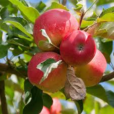
Apple Trees (3)
on drive, opposite Horsechestnuts) -
Thriving
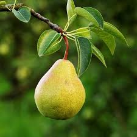
Pear Tree (1)
Small specimen -
Mature
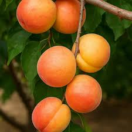
Apricot Trees (2)
Waldron-era plantings, still productive; courtyard -
Mature
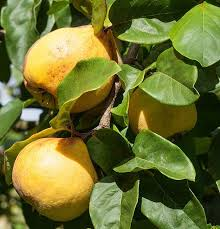
Quince Tree (1)
Deciduous tree with hard, aromatic bright golden-yellow pome fruit

Mature Shade Trees
-
Mature
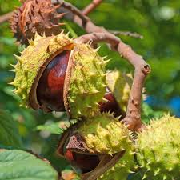
Chesnut Tree (1)
Large specimen -
Mature
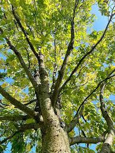
Hackberry (2)
Large specimens; front yard and driveway -
DecliningElm Trees (2)
Locate dnear greenhouse and over veg garden -
Mature
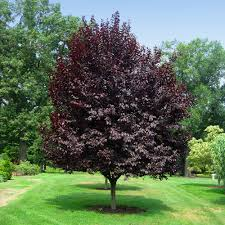
Plum Tree (1)
Located near gazebo -
Mature
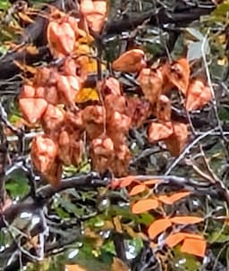
Goldenrain Tree (1)
Native to China and Korea
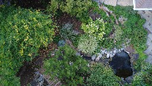
Courtyard and Stream
-
Mature
 Roses (various colors and maturities)
Roses (various colors and maturities)
Mature specimens, annual blooms -
Mature
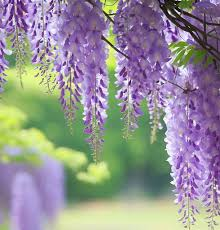
Wisteria
Mature, annual blooms (requires management) -
Thriving
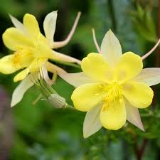
Columbine (golden)
Mature specimens, annual blooms -
Managing
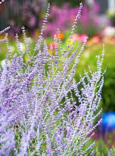
Russian Sage (extensive)
Require management -
Managing
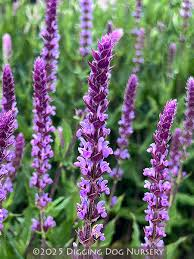
Salvia (purple)
Require management -
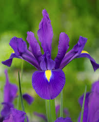
Iris Beds
Remnants of formal flower gardensDeclining
Existing Terraces
-
Roses (various colors and maturities)Mature
Mature specimens, annual blooms -
Columbine (golden)Thriving
Mature specimens, annual blooms -
Russian Sage (extensive)Managing
Require management -
Salvia (purple)Managing
Require management -
Iris BedsEstablished
Remnants of formal flower gardens
Future cutting gardensFlower Garden (TBD)
-
Native GrassesPlanned
Buffalo grass, blue grama restoration -
Terraced VegetablesPlanned
Historic kitchen garden recreation -
Heritage RosesPlanned
Period-appropriate varieties -
Cutting GardenPlanned
Flowers for house arrangements
Future terraced gardens with heritage roses and native grassesNew Terrace
-
Multi-colored RosesPlanned
Similar to Basilica -
Cutting GardenPlanned
Flowers for house arrangements
-
Waldron Era Garden Plants (2008)
Featured in Phoenix Home & Garden Magazine, April 2008 - "High-Desert Oasis"
During Aaron and Chantal Waldron's stewardship, the garden was extensively restored and featured in Phoenix Home & Garden magazine. The article highlighted the diverse plantings that created year-round color and visual interest in this high-desert landscape.
| Common Name | Plant Type | Notes |
|---|---|---|
| Yellow Snapdragons | Annual | |
| Cattails | Aquatic Plant | In lily pond |
| Yellow Flag Water Iris | Aquatic/Perennial | In the stream/pond |
| Blue Owens Grass | Ornamental Grass | |
| 'Morning Light' Miscanthus | Ornamental Grass | |
| Yellow Grove Bamboo | Ornamental Grass | Provides exotic appeal |
| Autumn Joy Sedum | Perennial | |
| Blue Sky Larkspur | Perennial | Blue flowering |
| Daylilies | Perennial | |
| Greek Yarrow | Perennial | In foreground near pergola |
| Hummingbird Mint | Perennial | |
| Late-blooming Roses | Perennial | |
| Magenta Jupiter's Beard | Perennial | West side of house |
| Meadow Sage | Perennial | |
| Moonbeam Ramoda | Perennial | Trickles through stream area |
| 'Moonbeam' Yarrow | Perennial | Yellow flowering |
| Pine Leaf Penstemon | Perennial | |
| Purple Echinacea | Perennial | |
| Purple Veronica | Perennial | |
| Russian Sage | Perennial | |
| Winter Jasmine | Perennial | |
| Yellow Columbine | Perennial | |
| Yellow Veronica | Perennial | |
| Arctic Willow | Shrub | |
| New Mexico Privet | Shrub | |
| Aspen | Tree | Fast-growing, aggressive roots |
| Japanese Maple | Tree | Mentioned for microclimate planting |
| Poplar | Tree | Fast-growing, aggressive roots |
| Purple Leaf Plum Tree | Tree | Contrasts with low-growing plants |
Garden Design Philosophy: The Waldron-era garden emphasized year-round color through diverse perennials and strategic use of ornamental grasses. The article noted that dense plantings and natural wind protection allowed the soil to hold water to an unusual degree, essential for thriving gardens in Santa Fe's high-desert climate.
Historic Water Management Systems
Sustainable irrigation from pre-basin well to modern efficient restoration
Original Well System
- Hand-dug well: Pre-1956 basin declaration, legal pre-basin rights
- Production capacity: 15-20 gallons per minute sustained
- Depth: Approximately 180 feet to water table
- Original purpose: Cross Orchard agricultural irrigation
- Current status: Fully operational, excellent water quality
Sluiceway Design
- Gravity-fed system: Efficient water distribution without pumps
- Controllable flow: Gates and channels for targeted irrigation
- Terrace integration: Works with landscape contours
- Seasonal flexibility: Adaptable to changing garden needs
- Water conservation: Minimal waste, maximum efficiency
Charlotte Wilson's Irrigation System Design
Details of the original irrigation system are no longer available. The irrigation system likely included sluiceway channels, terrace distribution, and seasonal flow controls. A similar method was recently restored at El Zaguán, headquarters of the Historic Santa Fe Foundation on Canyon Road. Historic Acequia Restored

Restored sluiceway at El Zaguán on Canyon Road
1. The New "Heart" of the System: The Well House
Since you have power and water source in one place, the Well House becomes your mechanical room.
Recommended Plumbing Configuration:
- The Cistern (Buffer Tank): Even with good water rights, it is best practice not to pump directly from the well into the irrigation system. This can burn out the well pump if it cycles too often.
- Setup: The well pump fills a storage tank (cistern) near or inside the well house.
- Size: 1,000–2,500 gallons. This acts as a buffer.
- The Booster Pump:
- Spec: 1.5 HP Centrifugal Multistage Pump (e.g., Grundfos CM series or Goulds).
- Function: Draws water from the cistern and pressurizes the mainline to a constant 50–60 PSI.
- Pressure Tank: A 20–44 gallon pressure tank is crucial. It holds pressurized water so the pump doesn't kick on for every tiny drip or hand-washing moment.
- Smart Controller: Mount a Wi-Fi-enabled controller (like a Hunter Hydrawise or Rachio) inside the well house.
2. Water Budgeting: The "3 Acre-Feet" Reality
Having 3 acre-feet is a significant asset in Santa Fe. Here is a rough breakdown of how that supports your lush design:
Total Available: ~977,000 gallons/year
The "Thirsty" Zones:
- Fescue/Buffalo Grass (~2,000 sq ft): Needs ~20 gallons/sq ft/year in Santa Fe. ≈ 40,000 gallons/year
- Orchard & Veggies: High demand during summer. ≈ 30,000 gallons/year
- Ponds: Evaporation replacement. ≈ 15,000 gallons/year
Total Estimated Use: ~100,000 – 150,000 gallons/year
Verdict: Your design uses only ~10-15% of your total water rights. You have abundant capacity to keep the Fescue lush and the orchard heavy with fruit without worrying about limits.
3. Finalized Zone Plan (Pressurized)
With 50 PSI available, here is the optimal zoning for the updated map:
| Zone | Area | Method | Notes |
|---|---|---|---|
| 1 | Fescue & Buffalo Grass (Front) | Pop-up Rotors | Use Hunter MP Rotators. They pop up 4-6 inches, clear the grass height, and vanish when done. |
| 2 | Rose Terrace | Drip Emitters | Use 1.0 GPH (Gallon Per Hour) emitters. One per bush. |
| 3 | Formal Garden | Spray Bodies | Fixed spray heads for dense geometric plantings, or drip grid. |
| 4 | Ponds & Lilacs | Drip Line + Autofill | Run a dedicated line to a float valve in the upper pond to keep water levels constant automatically. |
| 5 | Vegetable Garden | Drip Tape + Spigot | Install a Hydrant/Spigot here. You will want a hose for washing veggies or watering seedlings. |
| 6 | Flower Garden | Drip Grid | Grid layout of drip line for dense cutting flowers. |
| 7 | Orchard (Panhandle) | Bubblers | Use "Flood Bubblers" on each tree. These flood the tree well quickly, encouraging deep roots. |
| 8 | Berries (Panhandle) | Drip Line | Two parallel lines of drip tubing along the berry row. |
4. Immediate Action Item for Installation
The "Sleeve" Requirement:
Looking at your map, the driveway separates the Well House (Water Source) from the Front Garden (Fescue/Vinca).
- Crucial Step: Before any more paving or hardscaping is done, you must install a 4-inch PVC Sleeve under the driveway.
- Why? You need to run wires and the main water pipe from the Well House to the Front Garden. A sleeve allows you to slide these pipes under the driveway without cutting the asphalt later.
Garden Restoration Progress
Comprehensive restoration honoring Charlotte Wilson's innovative design


Site Assessment
10%Comprehensive plant inventory, soil analysis, water system evaluation, and historical research into original garden layout and design principles.
Completed Tasks:
- Tag trees for removal or trimming
- Hire arborist: Ancestral Tree Care Tree trimming estimate
Remaining Tasks:
- Complete plant inventory with GPS mapping
- Well water quality and flow rate analysis
- Historical photograph research and documentation
- Charlotte Wilson garden design research
Maintenance
5%Develop and implement a garden maintenace plan, including plants, stream, and hot tub.
Completed Tasks:
- Hire irrigation maintenance services (Isreal Varela 505 629-7689)
Remaining Tasks:
- Hire garden, stream, and hot tub maintenance services: Living Water
- Clean pond; assess water loss
- Drip irrigation assessment
- Restore historic sluiceway channels
- Install drip irrigation zones
- Test integrated gravity-flow and modern systems
Water System Restoration
20%Well system operational assessment complete. Modern irrigation infrastructure designed to work with historic sluiceway principles for maximum efficiency.
Completed Tasks:
- Well pump system inspection and testing
- Hire consultant for declare well ownership: Brittany Gaume 505 681 8099
- File Declaration of Well with State Engineers Office (10-10-2025)
- Declaration Granted (11-14-2025) Well declaration grant
Remaining Tasks:
- Map drip irrigation zones
- Historic sluiceway channel documentation
- Modern drip irrigation system design
- Water rights verification and documentation
- Assess need for new irrigation controller system
- Restore historic sluiceway channels
- Install drip irrigation zones
- Test integrated gravity-flow and modern systems
Heritage Plant Preservation
0%Mature fruit trees professionally assessed and preservation plan implemented. Historic varieties catalogued for future propagation and replacement planning.
Completed Tasks:
Remaining Tasks:
- Arborist assessment of all mature fruit trees
- Heritage variety identification and documentation
- Pruning and structural support installation
- Soil improvement around existing trees
- Lilac and ornamental shrub preservation plan
- Grafting material collection for propagation
- Disease treatment for declining specimens
- Install protective barriers during construction
New Plantings Plan
0%Period-appropriate plant selections researched. Native species integration planned to enhance sustainability while maintaining historic garden character.
Completed Tasks:
Remaining Tasks:
- 1920s-era plant variety research
- Native high-desert species selection
- Kitchen garden layout design
- Cutting garden plant list development
- Source heritage rose varieties and perennials
- Order native grass and wildflower seeds
- Plan seasonal succession plantings
- Create planting schedule and care protocols
- Coordinate with irrigation system installation
Terrace Design
0%Historical terrace layouts researched and documented. Modern terracing plans developed using sustainable materials and improved soil management techniques.
Completed Tasks:
Remaining Tasks:
- Historic terrace pattern research and mapping
- Existing stone retaining wall assessment
- Slope analysis and erosion evaluation
- Sustainable materials selection
- Final terrace construction drawings
- Stone and timber material procurement
- Excavation and foundation preparation
- Terrace wall construction and soil placement
- Drainage system installation
Implementation Timeline
5%Phased restoration plan developed to coordinate with house restoration work. Spring 2026 target for major planting and irrigation system completion.
Completed Tasks:
- Master restoration timeline development
- Maintenance plan and implementation
- Seasonal planting calendar creation
Remaining Tasks:
- Winter 2025: Maintenance; tree trimming; vegetable and cutting garden restoration; greenhouse setup
- Spring 2026: Irrigation system repair
- Summer 2026: Annual and vegetable gardens
- Fall 2026: Native grass seeding and establishment
- Ongoing: Maintenance and monitoring
Garden Documentation Gallery
Current conditions and restoration progress photography


Restoration Vision: Honoring the Past, Embracing Sustainability
Our garden restoration combines Charlotte Wilson's innovative water management with modern sustainable practices, creating a demonstration site for high-desert horticulture that honors both heritage and environmental stewardship.